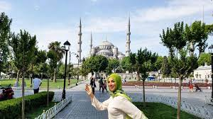
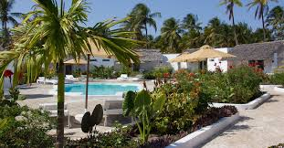
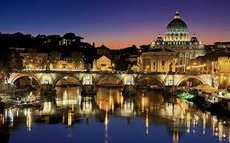
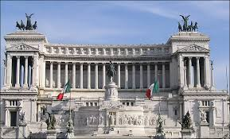

Istanbul
Lire la suite..

Zanzibar
Lire la suite..

Rome est la capitale de l'Italie Située au centre-ouest de la péninsule italienne,
près de la mer Tyrrhénienne, elle est également la capitale de la région du Latium.
En 2019, elle compte 2 844 395 habitants établis sur 1 285 km2, ce qui fait d'elle
la commune la plus peuplée d'Italie et la troisième plus étendue d'Europe après Moscou et Londres3.
Son aire urbaine recense 4 356 403 habitants en 20164,5. Elle présente en outre
la particularité de contenir un État enclavé dans son territoire : la cité-État du Vatican
(Stato della Città del Vaticano), dont le pape est le souverain. C'est le seul
exemple existant d'un État à l'intérieur d'une ville

Non loin du forum romain, à l’autre bout de la Via dei fori impierali, se trouve la piazza Venezia qui est la place centrale de Rome d’où partent toutes les rues menant aux principaux sites touristiques de Rome.
C’est le troisième site compris dans le billet d’entrée au Colisée. Le Mont Palatin est l’une des 7 collines de la ville de Rome, mais selon la mythologie c’est surtout le lieu où fut fondée la ville par Rémus et Romulus, mais oui vous savez, ces 2 jumeaux qui auraient été recueillis et élevés par une louve dans une grotte.
Le Colisée, (Colosseo en italien) à l'origine amphithéâtre Flavien (amphitheatrum Flavium en latin), est un immense amphithéâtre ovoïde situé dans le centre de la ville de Rome, entre l'Esquilin et le Cælius, le plus grand jamais construit dans l'Empire romain. Il est l'une des plus grandes œuvres de l'architecture et de l'ingénierie romaines.